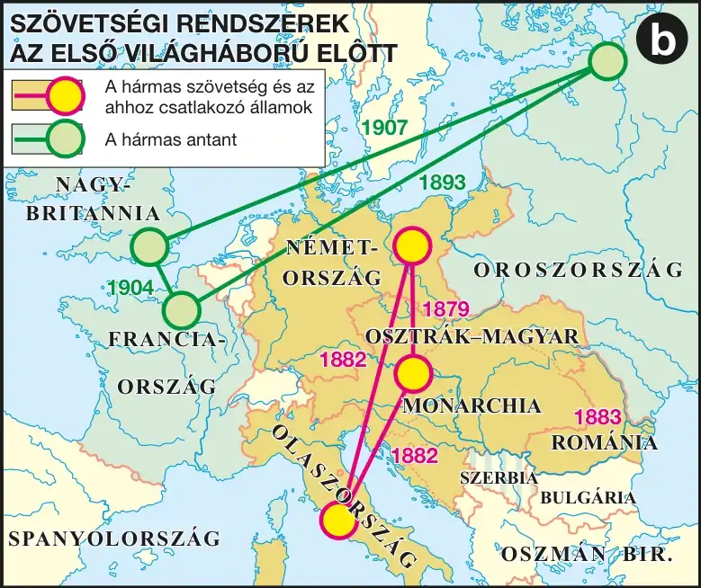

A szarajevói merénylet és a magyar álláspont
1914. június 28-án Szarajevóban a boszniai szerb Gavrilo Princip megölte az OMM trónörökösét, Ferenc Ferdinándot és feleségét. A merénylet után az osztrák–magyar vezérkar és a közös minisztériumok azonnali háborút akartak Szerbia ellen. A magyar miniszterelnök, Tisza István álláspontja ezzel szemben óvatosabb volt: bár az összecsapást elkerülhetetlennek tartotta, úgy vélte, még nem jött el az ideje, mert kedvezőbb nagyhatalmi erőviszonyokra és az Erdélyt megszerezni vágyó Románia semlegesítésére volna szükség. Tisza aggodalmait Németország fellépése oldotta: II. Vilmos német császár támogatásáról biztosította a Monarchiát, a német diplomácia pedig elérte, hogy Románia semleges maradjon. Az 1914. július 23-án átadott, majd a szerbek által elutasított ultimátum nyomán július 28-án megkezdődött az első világháború.
A hadicélok és a kezdeti lelkesedés
A Monarchia hadicéljait tekintve eltért a katonai vezetés és a magyar kormány álláspontja: az osztrák hadvezetés (Conrad vezérkari főnökkel) komoly területszerző terveket dédelgetett, Tisza István és a magyar kormány viszont a területszerzést nem tartotta célnak, mert féltek, hogy újabb szláv területek bekebelezése a Monarchia föderalizálódásához, majd széteséséhez vezetne. A háború kezdetén — mint minden hadviselő országban — Magyarországon is általános lelkesedés uralkodott: jogosnak érezték a háborút, mivel Szerbia támogatta a merénylőket, és úgy vélték, csak a háborúval lehet megőrizni Magyarország integritását. Ígéretek is elhangzottak: az év végére hazatérnek a győztes katonák, a parasztság pedig földet kap.
Fontos megkülönböztetés: a Monarchián belül nem volt egységes álláspont a háború céljairól — az osztrák hadvezetés terjeszkedő, a magyar kormány (Tisza István) inkább fenntartó, a status quo megőrzésére irányuló politikát képviselt, mert féltek a Monarchia nemzetiségi egyensúlyának felborulásától.
| Fogalmak | Személyek | Kronológia | Topográfia |
|---|---|---|---|
| antant; központi hatalmak | II. Vilmos; II. Miklós | 1914–1918 az első világháború; 1914. jún. 28. a szarajevói merénylet | Szarajevó |
Szövetségi rendszerek az első világháború előtt
A két szövetségi tömb és a háborús eszkaláció földrajzi kerete azonosítható.

1. forrás — Tisza István aggodalmai a háború megindításával kapcsolatban (tartalmi kivonat)
Tisza István azzal érvelt, hogy bár a Szerbiával való összecsapás előbb-utóbb elkerülhetetlennek látszik, a jelen pillanat nem alkalmas erre: a nagyhatalmi erőviszonyok nem kedvezőek, és különösen aggasztó, hogy Erdélyre igényt tartó Románia egy esetleges háborúban ellenséges oldalra állhat. Csak miután Németország biztosította a Monarchiát a támogatásáról, és a román semlegesség is biztosítottnak látszott, adta beleegyezését az ultimátum elküldéséhez.
a) Milyen két okból tartotta Tisza korainak a háború megindítását?
b) Mi oldotta végül Tisza aggodalmait?
c) Miért volt kulcsfontosságú Románia semlegessége?
Ellenőrző feladatok
Állítás: Tisza István kezdetben azonnali háborút sürgetett Szerbia ellen.
Ki gyilkolta meg Ferenc Ferdinándot Szarajevóban?
Egészítsd ki: A háború hivatalosan 1914. július ______-án kezdődött meg.